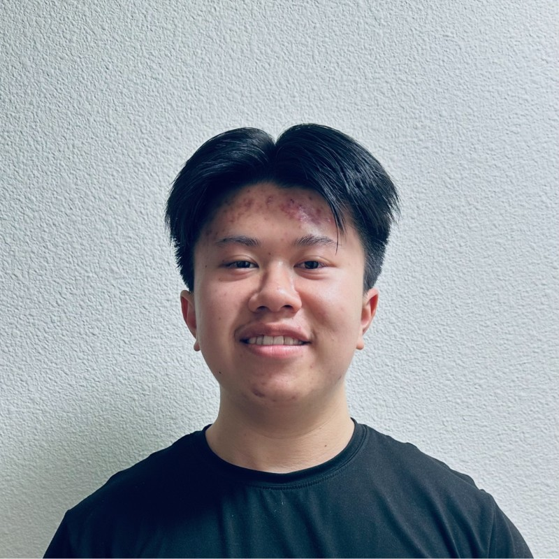

Hello, I'm Jacky Wu.

Learning, building, and sharing
Welcome to my corner of the web.
I am a Software Engineering student at California Polytechnic State University, San Luis Obispo, with an interest in app development and AI integration. This site is where I practice semantic HTML, responsive CSS, accessible design, and Git.
Away from the screen, badminton has taught me leadership, collaboration, and how to help a team grow. Explore my first web project, read what I am learning, or send a note through the contact page.